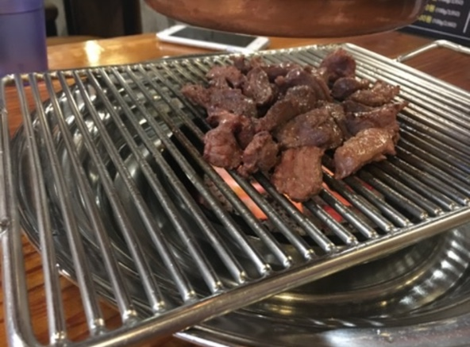

사진
- 소갯말
안녕하세요 동아대학교 경영정보학과에 재학중인 23살 김상엽입니다 저에대한 소개를 해보겠습니다
- 좋아하는 음식

온 세상에 있는 모든 고기를 좋아합니다
- 취미
제 취미는 재즈 음악 감상입니다
재즈를 들으며 독서를 하면 흥분되었던 마음이 진정됩니다
Theme From New York, New York이라는 곡입니다 마치 뉴욕공항에 도착한 느낌을 줍니다.
- 고향과 사는곳
경상남도 밀양시에서 자라왔고 현재 자갈치에서 거주중입니다
- 향후 계획
코로나가 잠잠해지면 호주로 워킹 홀리데이를 떠날 것 입니다
봐주셔서 감사합니다
마지막으로 자라온 과정을 표로 보여드리겠습니다 !
성장과정
| 학교명 |
기억나는 일 |
기간 |
| 밀양중학교 |
미술대회 도대회 출전 |
2012~2014 |
| 세종고등학교 |
동아대학교 합격 |
2015~2017 |
| 동아대학교 |
컴퓨터를 접한것 |
2018~ |